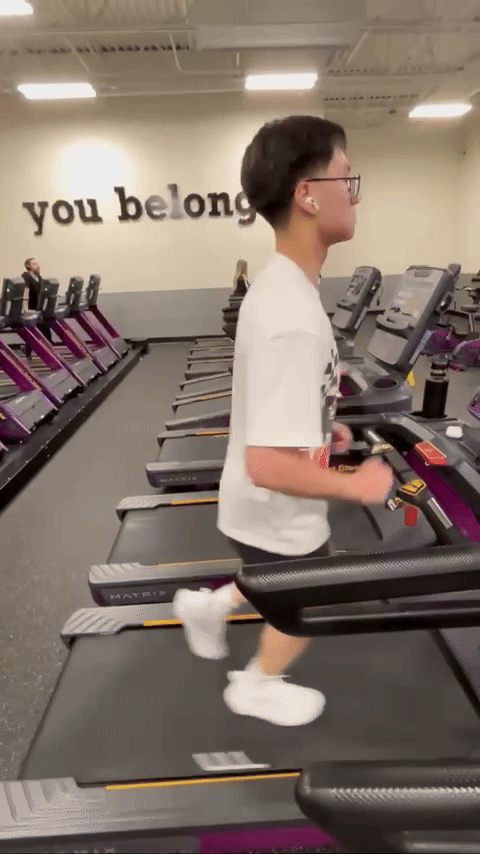

What I've Learned
The main concept I learned about was zone 2. I've mentioned it earlier, but what is it? Zone 2 is training at a mildly easy effort. It is measured using heart rate; the goal is to stay within the targeted heart rate zone. There are 5 zones, and the higher you go, the more effort your body is putting in. So wouldn't it make sense to go your hardest to make progress? I thought that too until I learned that zone 2 is the sweet spot for building stamina and endurance. You can calculate your training zones here: Zone Calculator
Another important thing is running form. Running form can make or break your running experience. Good form makes running much more efficient because you waste less energy with each step. A few key things to focus on are: keeping a slight forward lean with your head looking straight ahead, keeping your arms and shoulders relaxed, landing your feet under your hips instead of too far out, landing on your midfoot or forefoot, and maintaining a quick cadence. Cadence is the number of steps you take per minute. Ideally, you should aim for around 170-180 steps per minute. This helps your running feel smoother and more efficient because your feet land more lightly and your stride stays quick.
Progress
For the past three weeks, my main focus has been improving my form. One thing that really helped me was recording myself. I was able to see how I looked while running and what I needed to fix. Below you can see two GIFs of me running; they were taken a day apart. Being able to see the left side helped me immensely. My posture had practically no lean, and my arms were stiff. Although the right side isn't perfect, I was able to fix some of those mistakes by being able to see myself.

In terms of endurance, I've been adding five minutes to my runs every week. So, I started at 3 20 minute runs a week, and then I would do 3 25 minute runs a week, and so on. At the moment I'm at 30 minutes, but I hope to be at 45 minutes. Once I get there, I plan on adding interval runs or just running more. The thing with running is that progress comes better with volume, not intensity. I don't really have a set goal in mind; I just want to build endurance and enjoy it.